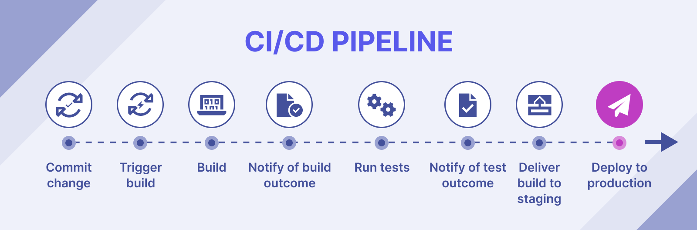
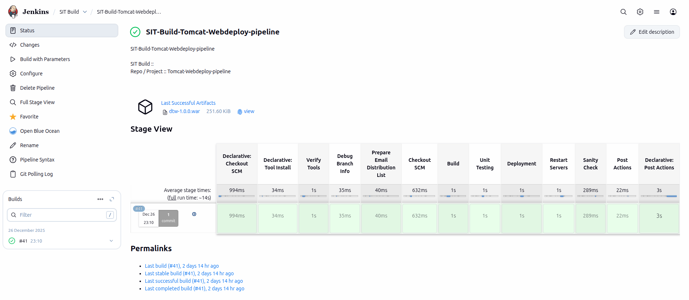

CI/CD Explained
CI/CD automates build, test, and deployment workflows.
CI/CD (Continuous Integration/Continuous Delivery or Deployment) automates the software development lifecycle, merging code changes frequently into a central repo (CI) and automatically testing/preparing them for release (CD), enabling faster, more reliable, and frequent software updates by bridging development and operations, making releases routine rather than stressful events. Continuous Integration (CI)
What it is: Developers frequently merge their code into a shared repository (e.g., GitHub).
What happens: An automated process builds the code and runs tests (unit, integration) to catch bugs early. Goal: Ensure new code integrates smoothly with existing code, preventing large, complex merge conflicts later.
Why CI/CD
Faster delivery, higher quality, fewer failures.
CI/CD (Continuous Integration/Continuous Delivery) is crucial because
it automates software building, testing, and deployment, enabling teams to release features faster, with fewer errors, and with greater reliability, which boosts efficiency, quality, security, and competitive advantage in today's fast-paced digital world. It breaks down silos between Development and Operations (DevOps) by creating a fast feedback loop, allowing for quicker fixes and alignment with market demands.
Key Benefits of CI/CD
Faster Delivery: Automation drastically reduces time-to-market, getting new features and bug fixes to users quickly.
Improved Quality & Reliability: Continuous automated testing finds bugs early, preventing them from reaching production and minimizing downtime.
Reduced Risk: Small, frequent changes are easier to manage, test, and roll back if issues arise, making releases less risky.
Enhanced Collaboration: Fosters a DevOps culture where Dev and Ops teams work together, improving communication and shared responsibility.
Stronger Security (DevSecOps): Automates security checks (SAST, DAST) within the pipeline, proactively finding vulnerabilities.
Better Customer Satisfaction: Rapid, high-quality releases meet evolving customer needs and expectations.
Competitive Advantage: Enables organizations to be more agile and responsive to market changes than competitors with manual processes.
Jenkins Fundamentals for DevOps
Automation bridges Dev and Ops.
Jenkins is an open-source automation server by which you can automate the building, testing, and deployment of the application to different servers like development, testing, and production.
Jenkins is primarily used for the continuous integration (CI) and continuous Deployment (CD) pipelines.
Jenkins is an open-source automation server that helps automate the building, testing, and deployment of software applications.
Jenkins is widely used for continuous integration (CI) and continuous delivery (CD) practices in software development.
By integrating with various build tools, version control systems, and test frameworks, Jenkins enables developers to automate repetitive tasks, such as building the application, running tests, and deploying to production. This automation helps to increase productivity, ensure code quality, and enable faster delivery of software updates.
Master CI/CD Pipelines: Automate building, testing, and deploying code efficiently.
Automate Repetitive Tasks: Save time and reduce human error in software development.
Wide Tool Integration: Works with numerous tools like Git, Maven, Docker, and Kubernetes.
Boost Team Collaboration: Facilitates continuous integration and feedback, improving team workflows.
Scalability: Supports large-scale projects with distributed builds.
Why Continuous Integration
Frequent code merges with automated testing.
What is continuous integration (CI)?
Continuous integration (CI) ensures that code changes are validated early and often through automated builds and tests, reducing errors and speeding up development.
Continuous integration is the practice of integrating all your code changes into the main branch of a shared source code repository early and often, automatically testing each change when you commit or merge them, and automatically kicking off a build. With continuous integration, errors and security issues can be identified and fixed more easily, and much earlier in the development process.
By merging changes frequently and triggering automatic testing and validation processes, you minimize the possibility of code conflict, even with multiple developers working on the same application. A secondary advantage is that you don't have to wait long for answers and can, if necessary, fix bugs and security issues while the topic is still fresh in your mind.
Common code validation processes start with a static code analysis that verifies the quality of the code. Once the code passes the static tests, automated CI routines package and compile the code for further automated testing. CI processes should have a version control system that tracks changes so you know the version of the code used.
What is Continuous Delivery (CD) ?
Always deployable builds.
Continuous delivery (CD) is the process of automatically preparing tested code so it is always ready for deployment to any environment. It is a software development practice that works in conjunction with CI to automate the infrastructure provisioning and application release process.
Once code has been tested and built as part of the CI process, CD takes over during the final stages to ensure it's packaged with everything it needs to deploy to any environment at any time. CD can cover everything from provisioning the infrastructure to deploying the application to the testing or production environment.
With CD, the software is built so that it can be deployed to production at any time. Then you can trigger the deployments manually or move to continuous deployment, where deployments are automated as well.
What is Continuous Deployment ?
Automatic production releases.
By removing manual release steps, continuous deployment enables teams to deliver new features faster, reduce errors, and respond to user needs in real time.
Continuous deployment enables organizations to deploy their applications automatically, eliminating the need for human intervention. With continuous deployment, DevOps teams set the criteria for code releases ahead of time and when those criteria are met and validated, the code is deployed into the production environment. This allows organizations to be more nimble and get new features into the hands of users faster.
While you can do continuous integration without continuous delivery or deployment, you can't really do CD without already having CI in place. That's because it would be extremely difficult to be able to deploy to production at any time if you aren't practicing CI fundamentals like integrating code to a shared repo, automating testing and builds, and doing it all in small batches on a daily basis.
CI/CD Pipeline
Automated stages from commit to monitoring.
A CI/CD pipeline is an automated workflow that helps software teams build, test, and release code consistently and efficiently. CI (Continuous Integration) automates merging code from multiple contributors and running tests to catch issues early. CD (Continuous Delivery or Deployment) automates pushing code to staging or production environments.
Together, a CI/CD pipeline ensures that software can be reliably released at any time. For example, a typical pipeline might include steps like code commit, automated testing, build creation, artifact storage, and deployment to staging or production.
While these steps can be done manually, automation reduces errors and ensures repeatability. Pipelines are often managed as code, integrating closely with DevOps practices to streamline software delivery from development to deployment.
CI/CD pipelines are commonly used by application delivery teams and operations teams (DevOps). They are the backbone of adopting a DevOps methodology.
Typically, a build server (or build agent) is used to enable CI/CD runs. These take the form of self-hosted virtual machines in the cloud that can be fully configured but also have to be maintained, or virtual machines provided as part of the platform you are using, which are typically less flexible in terms of adding software and plugins to them.
Containers can also enable consistent build environments, further removing the reliance on maintaining a build server. Each step of the CI/CD pipeline can be run in its own container, allowing each step to be run inside a fully customized container. This also enables pipelines to fully use all the benefits containerization orchestration affords, such as resilience and scaling where required.

Figure: Typical CI/CD pipeline from code commit to monitoring
CI/CD Diagram

Figure: Typical CI/CD pipeline from code commit to monitoring
The benefits of CI/CD implementation
- Speed
- Quality
- Reliability
The main benefits of CI/CD are faster releases, improved software quality, and reduced manual effort for developers.
Companies and organizations that adopt CI/CD tend to notice a lot of positive changes. Here are some of the benefits you can look forward to as you implement CI/CD:
Happier users and customers: Fewer bugs and errors make it into production, so your users and customers have a better experience. This leads to improved levels of customer satisfaction, improved customer confidence, and a better reputation for your organization.
- Accelerated time-to-value: When you can deploy any time, you can bring products and new features to market faster. Your development costs are lower, and a faster turnaround frees your team for other work. Customers get results faster, giving your company a competitive edge.
- Less fire fighting: Testing code more often, in smaller batches, and earlier in the development cycle can seriously cut down on fire drills. This results in a smoother development cycle and less team stress. Results are more predictable, and it's easier to find and fix bugs.
- Hit dates more reliably: Removing deployment bottlenecks and making deployments predictable can remove a lot of the uncertainty around hitting key dates. Breaking work into smaller, manageable bites means it's easier to complete each stage on time and track progress. This approach gives plenty of time to monitor overall progress and determine completion dates more accurately.
- Free up developers' time: With more of the deployment process automated, the team has time for more rewarding projects. It's estimated that developers spend between 35% and 50% of their time testing, validating, and debugging code. Automating these processes improves developer experience and significantly improves their productivity.
- Less context switching: Getting real-time feedback on their code makes it easier for developers to work on one thing at a time and minimizes their cognitive load. By working with small sections of code that are automatically tested, developers can debug code quickly while their minds are still fresh from programming. Finding bugs is easier because there's less code to review.
- Reduce burnout: Research shows that CD measurably reduces deployment pain and team burnout. Developers experience less frustration and strain when working with CI/CD processes. This leads to happier and healthier employees and less burnout.
- Recover faster: CI/CD makes it easier to fix issues and recover from incidents, reducing mean time to resolution (MTTR). Continuous deployment practices mean frequent small software updates so when bugs appear, it's easier to pin them down. Developers have the option of fixing bugs quickly or rolling back the change so that the customer can get back to work quickly.
How does CI/CD fit into the DevOps framework
Automation bridges Dev and Ops.
CI/CD fits into the DevOps framework by automating key processes that connect development and operations for faster, more reliable delivery.
It bridges the gap between development (Dev) and operations (Ops) through automation and continuous processes. By automating the build, test, and deployment phases, CI/CD enables rapid, reliable software releases. Due to this, it aligns closely with DevOp's goals of improving collaboration, efficiency, and product quality.
As an indispensable component of DevOps and modern software development, CI/CD leverages a purpose-built platform to optimize productivity, increase efficiency, and streamline workflows via automation, testing, and collaboration. This is particularly beneficial as applications scale, helping to simplify development complexity. Moreover, integrating CI/CD with other DevOps practices—such as enhancing security measures early in the development process and tightening feedback loops—enables organizations to overcome development silos, scale operations securely, and maximize the benefits of CI/CD.
This integration ensures that development, security, and operations teams can work more cohesively, streamlining the software development lifecycle. It also encourages a culture of continuous improvement.